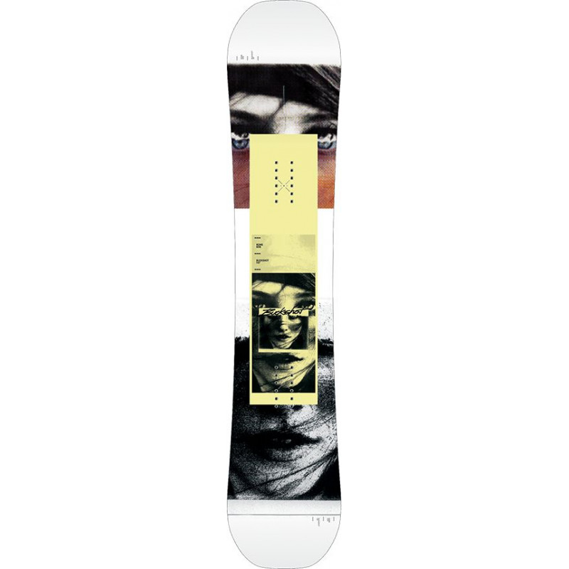

X Dėl geresnės Skelbiu.lt paslaugų kokybės naudojame slapukus (angl. cookies). Naršydami toliau, patvirtinate, kad sutinkate su slapukais. Tai bet kada galėsite atšaukti, pakeisdami nustatymus. Skelbiu.lt slapukų politika . Lankomiausias skelbimų portalas LT RU ( 0 ) Įsiminti skelbimai ( 0 ) Peržiūrėti skelbimai Paieškos ( 0 ) Prisijungti Registruotis Snieglentės, Snieglenčių sportas (104) Gauti naujus skelbimus: Ekrane El. paštu + Įdėti skelbimą Įsiminti skelbimai (0) Skelbimų: 104 Atnaujinti viršuje Naujausi viršuje Atnaujinti viršuje Pigiausi viršuje Brangiausi viršuje
NEPRALEISKITE NAUJŲ SKELBIMŲ
Snieglentės, Snieglenčių sportas
Gaukite naujus skelbimus į ekraną Gaukite naujus skelbimus el. paštu Vilnius spalio 26 d. 1
Snieglentė Nidecker megalight 2019
Nidecker megalight 2019 modelis 164cm. Geras stovis, padarytas pilnas servisas Būklė: naudota 180 € Marijampolė prieš 4 val.
5 snieglentes,apkaustai,3 batai
Vans 39 dydis batai kaina 30eurai,Burton moterisk 37 dydis 40euru,43 dydis 25eurai 1. SALOMON152Cm su Salomon SP4 apkaustais kaina80Eurai 2.Burton 140cm su apkaustais Kaina 70eurai 3.ENIGMA ST 151cm be Apkaistu Kaina 80eurai 4.SKATE BANANA... Būklė: naudota 110 € Vilnius, ... prieš 5 val.
Snieglentė Nitro Carbon su Flow apkaustais
Naudota, bet geros būklės Nitro Carbon snieglentė. Parke nebuvus - jokių nuskėlimų ar atsilupimų. Esu antras savininkas, tikslių gamybos metų nežinau, bet numanau apie 2014-15. Ilgis 162, plotis 25 cm, kietumas vidutinis (4-5). Greito užsegimo... Būklė: naudota 155 € Vilnius prieš 6 val.
Snieglentė Jones Mountain Twin (164cm, wide)
Parduodama naudota, tvarkinga snieglentė Jones Mountain Twin (164cm, wide) Išorinėje dalyje ji turi labai smulkių pabraižymų, kurie neturi jokios įtakos čiuožimui. Slystamasis paviršius tvarkingas, snieglentė yra paruošta čiuožti... Būklė: naudota 80 € Vilnius prieš 6 val.
Naudotos snieglentės (Didelis pasirinkimas!)
Parduodamos naudotos, tvarkingos snieglentės. Didelis gamintojų ir ilgių pasirinkimas. Snieglentės yra paruoštos čiuožti. Galimas siuntimas į kitus miestus. Daugiau parduodamų snieglenčių ir kitos slidinėjimo įrangos asortimentą galite... Būklė: naudota 200 € Vilnius prieš 6 val.
Naudotos snieglentės Jones ir Burton (be apkaustų)
Parduodamos naudotos snieglentės be apkaustų. Snieglentės turi defektų, todėl tiks mokymuisi čiuožti. Šiuo metu snieglentės yra pagaląstos ir nuvaškuotos. Nuotraukose kairėje: Jones Mountain Twin Ilgis: 158cm (wide) ... Būklė: naudota 40 € Vilnius prieš 6 val.
Pigios naudotos snieglentės su apkaustais
Parduodamos naudotos snieglentės su apkaustais. Snieglentės buvo nuomojamos, todėl turi dėvėjimosi požymių. Snieglentės yra tvarkingos, nesulaužytos. Slystamiesiems paviršiams yra atliktas servisas - snieglentės yra paruoštos čiuožti. ... Būklė: naudota 90 € Klaipėda prieš 8 val.
Snieglentė su apkaustais
Geros būklės Būklė: naudota 120 € Kaunas, ... prieš 9 val.
Snieglentė Lamar morph platinum 159
Naudota Snieglentė Lamar morph platinum 159 su apkaustais Būklė: naudota 59 € Vilnius, ... prieš 10 val.
Nauja 20 metų Ride Superpig snieglentė
Parduodu visiški naują Ride SuperPig lentą. Tam kas ieško rimtos lentos: Plati ir itin stabili - 45-79kg sveriančiam asmeniui (148cm). Vienakryptė, tačiau galima drąsiai važiuoti ir kita koja All mountain/Park/Powder Hybrid camber (Camberis... Būklė: nauja 310 € Reklama Vilnius prieš 11 val.
Snieglentė X-rage
Parduodu gero stovio, minkštą 149 cm. X-Rage snieglentę. Stovis 8/10. Kartu su snieglente pridėsiu ir greito užsegimo Flow apkaustus, stovis taip pat 8/10. Puikiai tiks pradedančiajam. Būklė: naudota 80 € Vilnius prieš 11 val.
Head snieglentė (be apkaustu)
Head snieglentė: 138cm. Kampai nebuki, vaškuota prieš 1 metus , priekio ir galo viršutinis sl palaužytas kaip matyti nuotraukose. ( 90eur) Kaina derinama. Jei susidomėjote ar turite klausimų rašykite žinutę jums patogiu metu, tačiau į... Būklė: naudota 90 € Šilutės r. prieš 1 d.
Snowboard
Snowboardas 50 eu kaina galutine guli nenauduojama pries pastatant nuvaskuota buvo t.t Būklė: naudota 50 € Kaunas prieš 1 d.
Snieglentės naujos ir naudotos
Snieglentės naujos ir naudotos Nitro, Head, Burton, Crazy Creek, Rad Air, K2, Volkl 1. Wild duck 165cm su Rage apkaustais naudota 139eur. 2. Maffia Aviator 140cm su apkaustais naudota 120eur. 3. NITRO ULTIMATE standart camber 159cm nauja... Būklė: naudota 10 € Klaipėda, ... prieš 1 d.
Snieglentė su apkaustais
Snieglentė iš Vokietijos, puikiai atliekanti savo darbą. Ilgis 144cm. Būklė: naudota 50 € Kaunas prieš 1 d.
Naudotos snieglentės su apkaustais
1. Salomon Pulse RTL 158cm kaina 80 eur. 2. Technine 157cm kaina 80eur. 3. Volkl Rental Rocker 149cm kaina 70eur. 4. Rossignol E. X. P. 148cm kaina 90eur. 5. Head On Course 140cm kaina 55eur. 6. Head Tribute R 120cm kaina 70eur. 7. Rossignol... Būklė: naudota 55 € Druskininkai, ... prieš 1 d.
Snieglentė Head 130 cm, su batais.
Puikios būklės 130 cm. snieglentė Head. Batai 42 dydžio, vidpadis 28 cm, naudoti vieną sezoną. Būklė: naudota 55 € Kaunas prieš 1 d.
Slidinėjimo įranga
1. Apkaustai Raven FT270 L dydis, greito užsegimo. (nėra tvirtinimo plokštelių ir važtų) Kaina 45€ 2. Apkaustai SP dydis M-L, greito užsegimo. (nėra tvirtinimo plokštelių ir važtų) Kaina 45€ 3. Batų džiovintuvas 2€ 4. Šalmas Trespass juodas... Būklė: naudota 5 € Kaunas, ... prieš 1 d.
Snieglentė 158
Snieglentės ilgis 158. Snieglentė naudota, matyti naudojimo požymiai. Yra neslystantis guminis padukas priklijuotas. Taip pat yra lipdukas juodas (gali būti kad trupėti pradėjo, bet nesu tikras nes jau buvo kai pirkau, bet čiuožti netrukdo).... Būklė: naudota 50 € Panevėžys prieš 1 d.
Snieglentė "Morrow Snowboards/fury 146cm(6381)
Parduodama Snieglentė "MORROW SNOWBOARDS/FURY 146CM(6381). MŪSŲ LOMBARDĄ-KOMISĄ GALITE RASTI ADRESU: Nemuno g. 70, Panevėžys https://www.skelbiu.lt/mano-skelbimai/ Būklė: naudota 95 € Klaipėda prieš 1 d.
Snow board
Snow board, veikia puikiai nieks nesuluze, nekliba. Būklė: naudota 12 € Vilnius, ... prieš 1 d.
Superkame naujas, naudotas gerų firmų snieglentes
ISPARDUOTUVES-LOMBARDU TINKLAS VILNIUJE IR KAUNE.VISA PARA.PALUKANOS NUO 2%,TAISOME TELEFONUS,PLANSETES,KOMPIUTERIUS IR KITA-SUPERKAME VISKAS KAS TURI KOMERCINE VERTE,LOMBARDAS-PALUKANOS NUO 2%.PINIGU YRA VISADA,LAUKIAM! GALIM ATVYKTI PAS JUS... Būklė: naudota Ieško Vilnius prieš 1 d.
Arbor Relapse
Arbor Relapse 155cm Būklė 9/10 Puiki snieglentė tinkanti slidinėjimui kalnuose, tiek parke. Jokių rimtų įbrėžimų. Reikia nusivaškuoti o tada atsistoji ir važiuoji. Papildomai dovanoju vaikišką snieglentę Būklė: naudota 150 € Vilnius prieš 1 d.
Prisijunk ir rask savo įsimintus skelbimus visur – kompiuteryje, telefone, planšetėje ARBA Jungtis su Facebook Jungtis su Google Skelbiu.lt pagalba: +370 664 55727 Darbo laikas: I-V 08:20 - 17:00 Naudojimo taisyklės / D.U.K. Kontaktai Svetainės struktūra D I G I N E T
Mauris vitae nisl nec metus placerat perdiet est. Phasellus dapibus semper urna. Pellentesque ornare, orci in consectetuer hendrerit, volutpat.
Pellenteque ornare

Snieglente Raven Gravy - Slides.lt Ši snieglentė yra tvirta, lengvai valdoma ir universali, todėl puikiai tinka tiek pažengusiems, tiek pradedantiesiems slidininkams. Snieglentės tipas: Allmountain/Freestyle Snieglentės forma: True twin tip, gullwing Sidewall/Sandwich: suteikia didesnį pasukamumą, sukimo jėgą perduodant į lentos kraštus.
Naujos ir nauodotos snieglentės | - Slides.lt Snieglentė CrazyCreek YANK 125 cm (tvarkinga, gero stovio) - 35 Eur Dėklas Loop (iki 155 cm lentai) - 10 Eur Nauji batai Atomic dydis 40 1/3 - 42 Eur Nauja slidinėjimo striukė dare2b, dydis EUR176, maždaug 155 - 165 cm ūgiui. - 25 Eur...
Snieglentė - StraipsniuKatalogas.eu Snieglentė. Žaidimas skirtas kompiuteriniai tinklapio versijai, o jūs užėjote per mobiliąją versiją, todėl spauskite ČIA. Pelyte reguliuoji greitį ir kryptį. Stenkis, kad žalios vėliavėlės būtų tau iš kairės, o raudonos – iš dešinės. Kuo didesniu greičiu pro jas pralėksi, tuo daugiau taškų gausi.
Snieglentė Dažniausiai 3-4 cm ilgėlesnė nei freestyle snieglentė. Dažniausiai tokios lentos turi mažiau išlinkusius šonus, yra vienos krypties formos, gana lanksčios. Tai universalios snieglentės, skirtos važinėti viskuo, ką rasi ant kalno: pradedant kūryba parke, baigiant natūraliomis puraus sniego pusnimis arba gerai išlyginta trąsa.
Vyriškos Snieglentės Jau daugiau nei 20 metų mūsų meilė ir aistra autentiškiems lentų sportams padeda mums išlaikyti lyderiaujančias pozicijas rinkoje. Dalindamiesi savo sukaupta patirtimi ir aistra šiems sportams siekiame įkvėpti Lietuvos žmones domėtis ir užsiimti mūsų mylimais lentų sportais kartu su mumis.
snieglentė | Gyvenu Gerai Snieglentė - speciali lenta, kuri yra pritaisyta prie batų specialiais apkaustais, naudojama snieglenčių sporte. Snieglentės dažniausiai būna nuo 140 iki 165 cm ilgio, 24 - 27 cm pločio. Jų dydį kiekvienas žmogus pasirenka pagal savo slidinėjimo lygį, ūgį, svorį, amžių, lytį ir slidinėjimo rūšį, kurios praktikuojamos snieglenčių sporte.
Snieglentės - Snieglentės|Snieglenčių batai|Snieglenčių ... Į pagalbą atskuba Pathrons SPLIT tipo snieglentė, bei jai tinkantys apkaustai Prie snieglenčių galime pasiūlyti didelį asortimentą snieglenčių priedų. Nolimit.lt galite įsigyti snieglenčių batus, snieglenčių apkaustus, greito užsegimo apkaustus, snieglenčių krepšius, šalmus apsaugas ir kitus snieglenčių priedus.
Pixwords atsakymas SNIEGLENTĖ Snieglentė Burton Deep Thinker Wide. Bazinė kaina 580,00 EUR Kaina 464,00 EUR-20%; Snieglentė Burton Deep Thinker. Bazinė kaina 580,00 EUR Kaina 464,00 EUR. Išparduota -20%; Snieglentė Burton Chopper. Bazinė kaina 170,00 EUR Kaina 136,00 EUR. Išparduota -20%; Snieglentė Ride Helix 18' ...